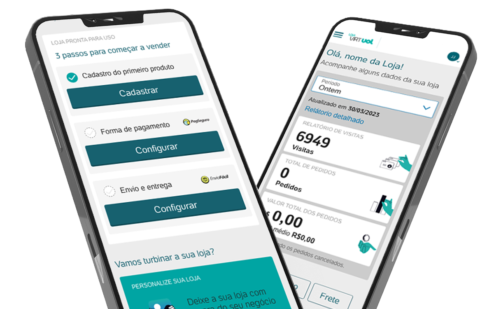
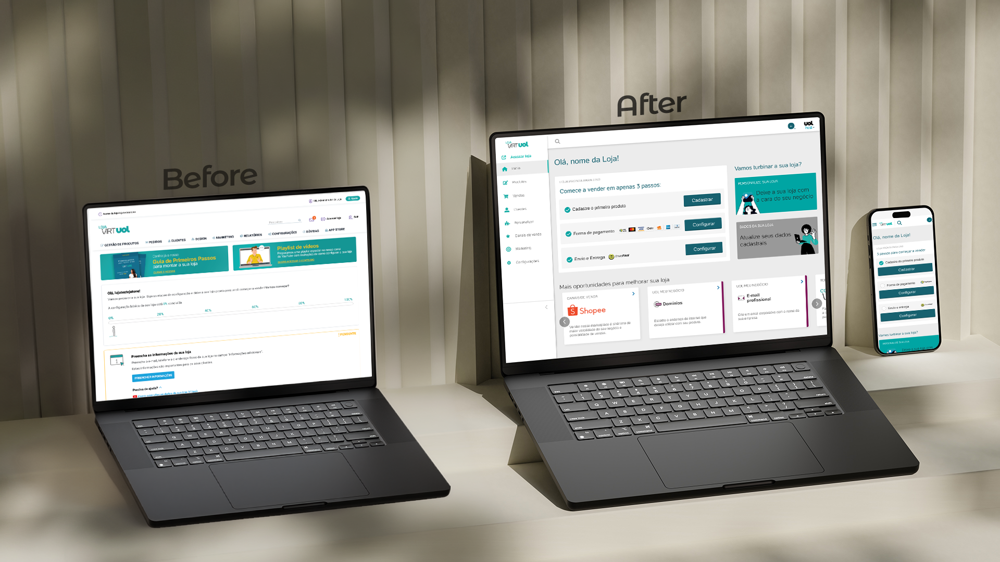
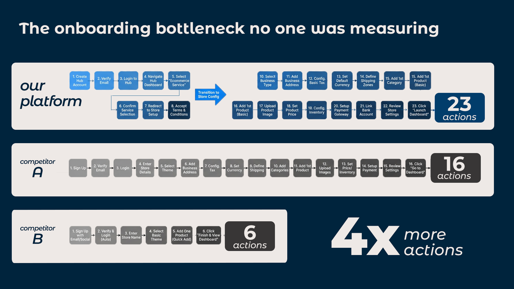
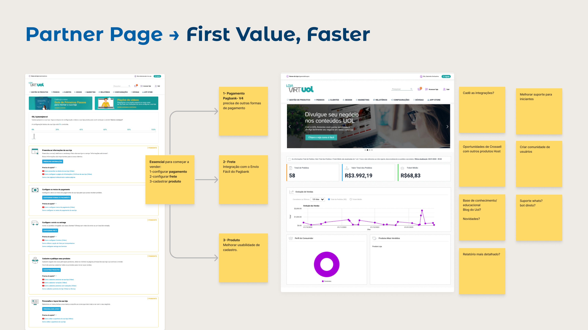
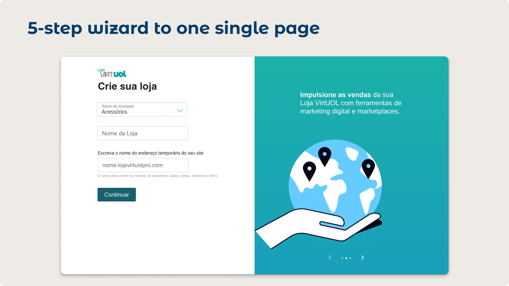
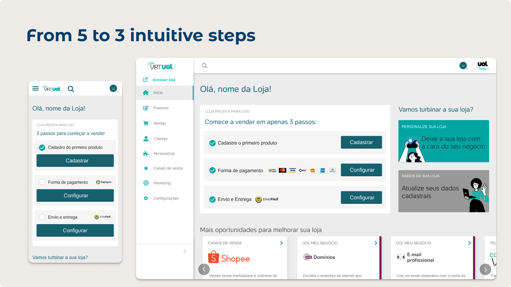
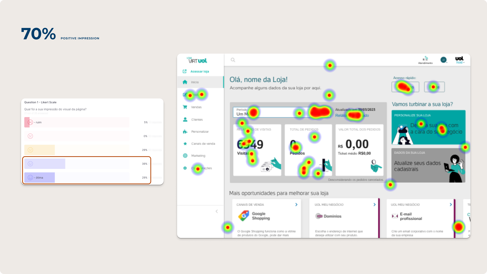

UOL Host's solutions hub includes a B2B SaaS e-commerce platform for SMB sellers. A partner's legacy version needed to migrate into it — bringing its users and its broken onboarding along. 23 steps, no mobile, no path to value. I redesigned the full journey across product, CRM, and support in 3 months. Post-launch: +170% NPS, 80% onboarding completion, +190% email engagement.


Before: 23 steps, desktop only, no path to value. After: mobile-first, single page, store-ready in minutes.
Problem
UOL Host's solutions hub is a B2B SaaS product for SMB sellers. When a partner's legacy e-commerce platform migrated into it — along with its existing users — the onboarding came with it: 23 steps, nearly 20 minutes before anyone could configure their store. Competitors averaged 6 to 16 steps. The platform was desktop-only, but most SMB owners manage their business from their phones. There was no mobile version at all.
Constraint
The first onboarding steps were shared across the hub and owned by another team. I couldn't touch them. So I reframed the problem: if the entry can't change, how do we accelerate time-to-value once users land inside the platform? That question shaped every decision that followed.

23 actions vs the competitor's 6. A conversion emergency, not a design preference.
My Role
I was the only designer across four parallel workstreams — none of them assigned to me. I mapped the full onboarding journey, brought the 23-step benchmark to the product review, and used that data to earn buy-in for a scope well beyond what was originally planned. The CRM emails, mobile-first approach, and in-product support form were all additions I proposed. Each one started with evidence: drop-off data, competitor analysis, user complaints. That's how I expanded the project without formal authority.
Bi-weekly design reviews with 10 stakeholders across engineering, business, product, CRM, and sales kept the room aligned. Not status updates: live work-in-progress sessions that replaced doubt with visibility. By launch, the most skeptical voices were championing the release.

01. The first screen after onboarding: redesigned to show immediate value instead of options.

02. One usability round revealed the step structure itself was the problem, not the content inside it.

03. Product registration: from 5 disconnected screens to one scannable page. Same information, half the friction.
Mobile-first onboarding in motion: one page, progressive disclosure, no dead ends.

04. Dashboard validated with heatmaps: 70% of engagement landed exactly where we designed
The redesigned dashboard answers one question immediately: what do I do next?
05. Trigger-based emails tied to each onboarding stage: built to bring SMB owners back to where they stopped.
Design Decisions
SMB owners don't sit at a desktop all day. They check orders between tasks, respond to customers from their phone, monitor their store on the go. The legacy platform ignored this completely. I designed mobile first and scaled up to desktop. Every screen started from the smallest viewport, which forced me to prioritise what actually mattered. What didn't survive the small screen probably didn't need to be there at all.
The original onboarding ran across 5 separate screens. Users lost context between steps. I consolidated it into one scannable page with progressive disclosure. Engineering already knew the component patterns, so the build stayed on schedule and the user stayed oriented throughout.
The first thing users said after onboarding was "what do I do now?" I redesigned the dashboard to answer that immediately: what's set up, what's missing, what's the fastest path to store-ready. The heatmap validation confirmed it: 70% of engagement landed exactly where we designed.
Results & Impact
The improvement came from all four workstreams launching together. None would have moved the numbers alone.
+170%
NPS improvement post-launch
+80%
onboarding completion rate
+190%
unique email CTR
Key Learnings